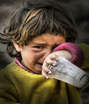
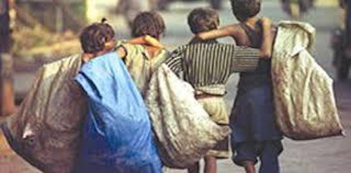
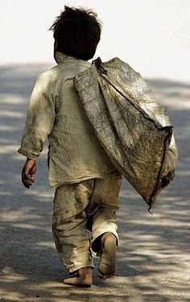
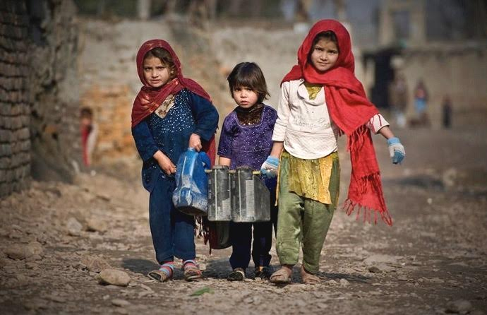
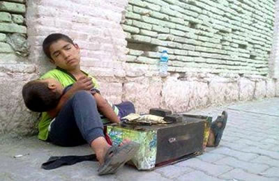
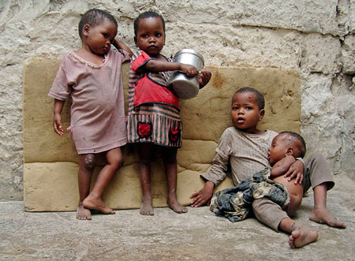
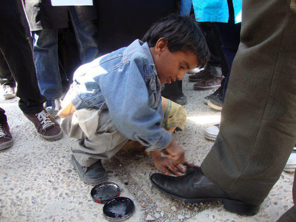
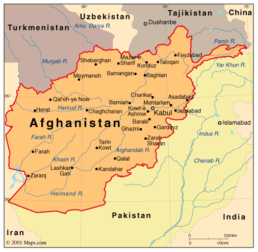

The normal place for a child to live is with his family where he is loved
First and foremost, these children need to be provided with basic shelter where they can be cared for, fed and clothed.
Second of all, it must be remembered that most of these children have been seriously traumatized: they have witnessed bloodshed, murder, torture and the like; they have been victims of abuse; they have been raped and much more besides.
Thirdly, these children need to be assured that they will not be turned out on the street at 16 and will be educated and trained
To sum up, helping the street children is a costly, difficult and long term project.


In Afghanistan, around 20% of children are expected to work in order to provide for themselves and for their family. Street vendors, water carriers, cardboard collectors, shoe polishers, taxi solicitors, domestic servants, assistants in boutiques, are the kind of odd jobs done by Afghan children.
The child plays an important economic role in the Afghan family structure, mainly because the little money earned by their parents is hardly enough to feed the hungry mouths in the family. Additionally, due to cultural practices, Afghan mothers rarely choose to seek employment outside their homes. In this situation, the family relies upon the economic contribution of the child, even if it means the child is left begging on the streets.
The consequences which follow their obligation to work are indeed tragic: absence of education, police violence and disease linked to pollution and to the drastically changing climate (In summer the temperature goes as high as 40°C or more and in winter the temperature could go down to -20°C)
Violence and exploitation
Young Afghans are often made victims of violence. In 2009, around 250 children were killed during terrorist attacks.
Moreover, many among them are victims of sexual abuse. About 1,500 incidents are recorded each year; unfortunately, the majority of the victims do not dare to reveal the unpleasant experiences they have gone through. Furthermore, most often the perpetrators are not taken to courts due to political reasons (former war lords or members of the government, corruption, etc). Only a serious change in attitude would save the Afghan children from being considered as objects prone to exploitation.
Child soldiers
Under the Taliban regime, thousands of Afghans under the age of 18 were enrolled in terrorist groups, in one way or another. They were first “brain washed”, then given training on the handling of weapons, and finally sent to war. Certain children, barely 6 years of age, were even used as child suicide bombers.
In the beginning of 2011, Afghanistan signed an agreement with the United Nations to stop the recruitment of children into the national police; after it was included in the blacklist of the UNO since 2010. Thus the government takes the first step in an important process which could soon mark the end of the era of child soldiers and would help the already traumatized excombatants to reintegrate into civilian life.
Situation Of Children Street In Afghanistan 51.8%
51.8%
Click here to know about the stuation of Afghan's children and charitables
On any given day in the towns and cities of Afghanistan, tens of thousands of children head to the streets to beg and hawk sundries — even during the winter, when bitter winds and snow keep most adults indoors. These street kids, who earn on average less than $2 a day, are often the only means of support for their families. And their numbers are growing.
In Kabul's trendy Shahre-Naw neighborhood, 10-year-old Jamal, a waif of a salesman in faded pink boots, is hawking gum for about 20 cents. Determined to score a sale, no matter what, he chases after pedestrians and darts in and out of snarled traffic. "I'm a little scared of the cars," he says. "One hit me coming the wrong way down the street. But I wasn't hurt too bad."
Every day children roam around Herat, dodging the dangerous traffic, to wash car windscreens, or sell gum, magazines and other small items. They hover around restaurant and hotel doorways, shivering in the cold, from dawn till late at night, plying their goods and services.
The number of beggars in the streets of Mazar, especially child beggars, is on the rise with the approach of Eidul Fitr, the religious festival of Muslims to mark the end of the fasting month or Ramadan. Wearing shabby cloths with worn-out shoes, beggars of every age and sex can be seen in the busiest markets of this Afghan capital of five million people. Men and women as well as boys and girls whose ages are ranging from eight to eighty years can be seen in every street, market, square as well as in front of five-star hotels or restaurants known for frequenting by foreigners and well-off people for Iftar dinners
Take a walk through the crowded markets of Bamian and you can see them everywhere: young school age boys and girls selling plastic bags, bottled water, and other merchandise. Street children, like 12 year-old Madena -- originally from the northern city of Mazar Shariff. "My father was killed in the war and now I am working here," she says. According to United Nations statistics, more than 60,000 children now work in the streets of Bamian to survive.
There are an estimated 50,000 to 60,000 street children in the Afghan capital alone. Among them are those who could not afford an education as refugees in Iran or Pakistan, and are unable to go to school as returnees in Afghanistan because they have to work from dawn to dusk to support their families. A UNHCR-funded project is working to bring change
"In Afghanistan, despite the progress in school enrolment over the last two years, half of school-age children are estimated to be out of school," Shigeru Aoyagi, country director of UNESCO in Afghanistan, told a news conference in ghandahar. Working children, street children, children in prison and disabled children were among those excluded, the U.N. said, but by far the biggest group are girls.